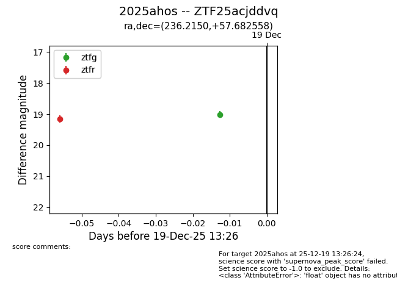
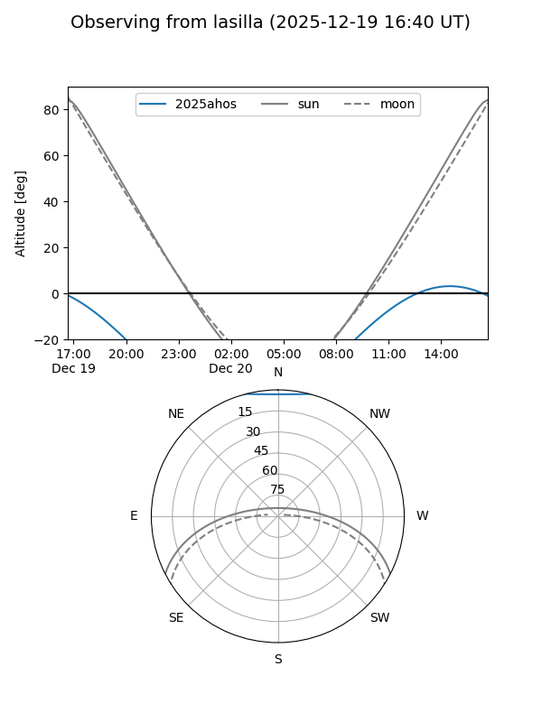
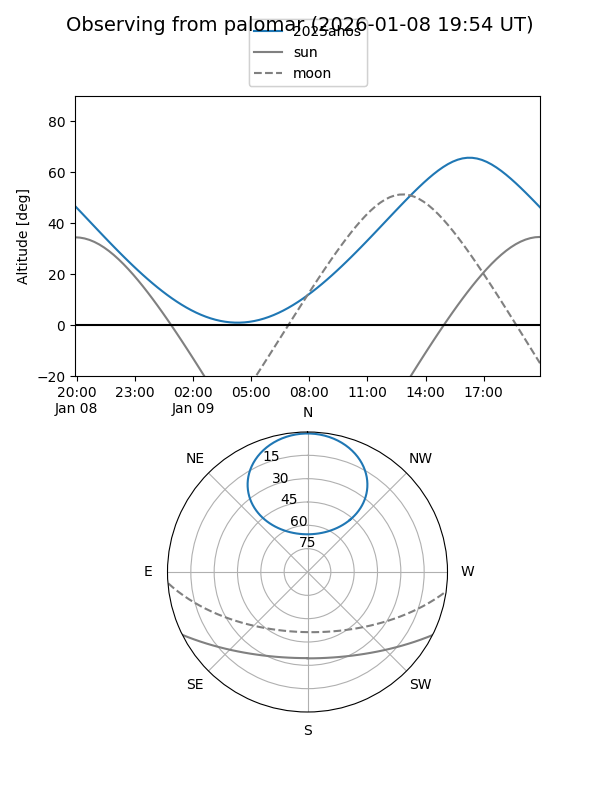
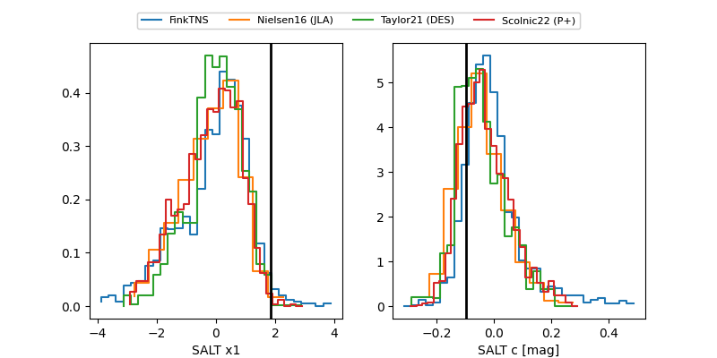

2025ahos
Target 2025ahos at 2025-12-28 13:36
Aliases and brokers:
FINK: fink-portal.org/ZTF25acjddvq
Lasair: lasair-ztf.lsst.ac.uk/objects/ZTF25acjddvq
ALeRCE: alerce.online/object/ZTF25acjddvq
TNS: wis-tns.org/object/2025ahos
YSE: ziggy.ucolick.org/yse/transient_detail/2025ahos
alt names
ZTF25acjddvq (ztf,fink_ztf)
2025ahos (tns,yse)
Coordinates:
equatorial (ra, dec) = 236.2150,+57.68256
equatorial (HMS+DMS) = 15:44:51.61,+57:40:57.21
galactic (l, b) = (90.3764,+46.99604)
Flags:
Photometry:
last ztfg=19.01, ztfr=18.51
1 ztfg, 3 ztfr detections
Lightcurve

Visibility


Additional plots
